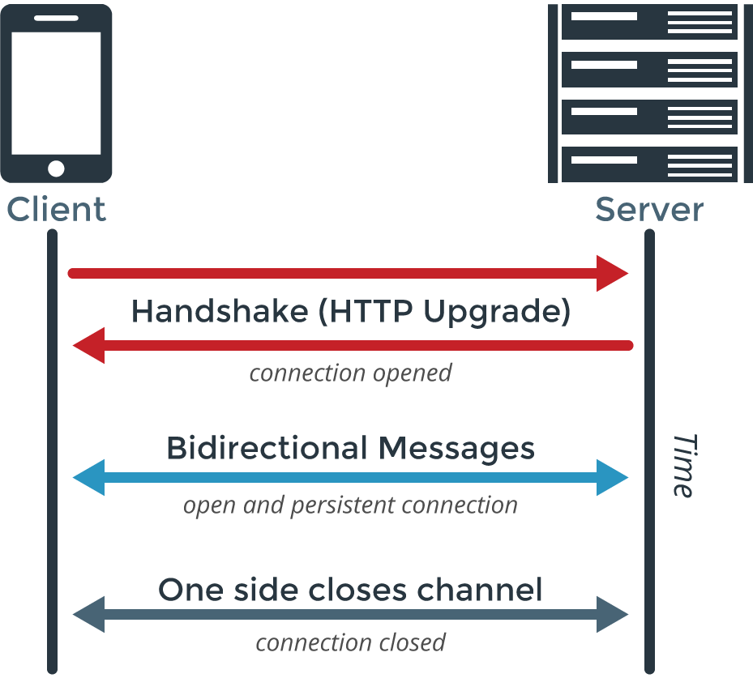

class: center, middle # IEMS 5703<br/>Network Programming and System Design ### Lecture 7 - WebSocket and Real-time Communications #### Albert Au Yeung<br/>1st March, 2018 --- class: middle, center # Bi-directional Communication --- # HTTP ### HTTP implements a **pull** mechanism - Communication is always **initiated by the clients** - Clients **pulls** data from the server when necessary <center> </center> --- # HTTP ### HTTP is a **pull-based** protocol - Users browse the Web and actively decide which Website to browse, which link to follow - A **effective** and **economical** way (every user chooses what he needs) - However, if the client wants to check if there is any update from the server regularly, the pull model can put heavy load on the server - Also, the server does NOT have any way to **actively send data** to the client. --- # When do We Need Push ### Here are some examples that **bi-directional commuication** are desirable - A Web-based chat room with multiple clients connected to a Web server - Online multi-player games (e.g. [BrowserQuest](http://browserquest.mozilla.org/) by Mozilla) - A Web service that wants to notify the client with the progress of a task - Information feeds (e.g. financial data updates, sports events live updates, etc.) - ... --- # Push - The World Wide Web, and in particular the HTTP protocol, is designed for **pull**, and additional engineering is required to implement **push** on the Web ### Some ways to **emulate** push on the Web - Polling (Periodic pull) - The Comet model - BOSH - WebSocket --- class: split .column-left[ # Polling - **Polling** is a simple method for emulating push - The client polls the server periodically to check if new messages or updates are available - **Advantages:** - Easy to implement - No extra development on the server-side - **Disadvantages:** - Unnecessary network traffic generated - Extra workload on the server ] .column-right[ <center> </center> ] --- # Examples of Polling ### The Post-Office Protocol (POP) for email - Email clients using the POP3 protocol make regular requests to the mail server to check for new emails ### RSS Feed Readers - RSS resources are served by HTTP, and thus are all pull-based - RSS feed readers poll the RSS servers regularly and check for new updates of the feeds --- # The Comet Model - **Comet** is a model for implementing Web applications that allow servers to push data to clients (browsers) - Implementations of Comet applications fall into two major categories - **Streaming** - **Long-polling** - Reference: http://en.wikipedia.org/wiki/Comet_(programming) --- class: split # The Comet Model - Streaming .column-left[ - A persistent connection is established between the browser and the server - Data is sent from the server a chunked block - Events are incrementally sent to the browser (e.g. using `script` tags to execute JavaScript commands) Reference:<br/> http://en.wikipedia.org/wiki/Comet_(programming)<br/> http://www.ibm.com/developerworks/library/wa-reverseajax1/ ] .column-right[ <center> </center> ] --- class: split # The Comet Model - Long-polling .column-left[ - A request is sent to from the client to the server - The server **holds the connection** until some events happen, then response is sent back to the client - The client, on receiving a response, issue another request immediately to the server - Therefore, there is always an active HTTP connection between the server and the client, on which the server can send response to the client - Usually implemented using AJAX (Asynchronous JavaScript And XML) ] .column-right[ <center> </center> ] --- # BOSH ### BOSH stands for **Bidirectional-streams over Synchronous HTTP** - It makes use of HTTP **long-polling** - A single TCP connection is established to receive push data from server - If no data needs to be pushed, server sends an empty <body/> message - If client needs to send data to server, a **second socket** is used to send HTTP post requests - The old and new connections will then **switch roles** (the new will be used for long-polling thereafter) Reference: http://xmpp.org/extensions/xep-0124.html --- class: middle, center # WebSocket --- # WebSocket - A protocol providing **full-duplex communications channels** between two computers over a TCP connection - Designed to be implemented in Web browsers and Web servers - Communications are done over TCP port 80 or 443 (can be used in secured computing environments) - Supported in Chrome 14, Safari 6, Firefox 6, IE 10 or later versions - Reference: - http://tools.ietf.org/html/rfc6455 - http://www.websocket.org/ --- # WebSocket - A **persistent connection** between a Web client and a Web server - Both sides can send out data to the other side at any time ### Why WebSocket? 1. Lower latency (avoid repeated TCP handshaking) 2. Smaller overhead (only 2 bytes per message) 3. Less unnecessary communication (data is only sent whenever needed) --- # How does WebSocket Work? - A WebSocket connection starts with a **normal HTTP** connection - Client sends a regular HTTP request to the server with an **upgrade** header field ```bash GET ws://websocket.example.com/ HTTP/1.1 Origin: http://example.com Connection: Upgrade Host: websocket.example.com Upgrade: websocket ``` - If the server supports WebSocket, it sends back a response with the **upgrade** header field ```bash HTTP/1.1 101 WebSocket Protocol Handshake Date: Wed, 16 Oct 2017 10:07:34 GMT Connection: Upgrade Upgrade: WebSocket ``` --- class: split # How does WebSocket Work? .column-left[ - Once the handshake is completed, the initial HTTP connection will be **replaced** by the WebSockets connection (using the same underlying TCP/IP connection) - Both the client and the server can now start sending data (can be **text** or **binary** data) to the other side - Data are transferred in **frames** - Messages (payload) will be reconstructed once all frames are received - Because of the established WebSocket connection, much **less overhead** will be incurred on the message being transmitted ] .column-right[ <center>  </center> ] --- # WebSocket Data Frames - A message (payload) will be sent in one or multiple **frames** - The message will be reconstructed once all frames are received <center> </center> --- # WebSocket Data Frames ### The Opcode field defines the payload data - `0x0` for continuation (This frame should be concatenated with the previous frame(s)) - `0x1` for text (encoded in UTF-8), `0x2` for binary ### Masking - A message from the client to the server is always **masked** - The **MASK** bit is always 1 for a message from the client - Masking is done by **XOR** operation between the mask key and the data --- # WebSocket Data Frames - An example of continued frames sent from the client ```bash Client: FIN=1, opcode=0x1, msg="hello" Server: (process complete message immediately) Hi. Client: FIN=0, opcode=0x1, msg="and a" Server: (listening, new message containing text started) Client: FIN=0, opcode=0x0, msg="happy new" Server: (listening, payload concatenated to previous message) Client: FIN=1, opcode=0x0, msg="year!" Server: (process complete message) Happy new year to you too! ``` - Ref: https://developer.mozilla.org/en-US/docs/Web/API/WebSockets_API/Writing_WebSocket_servers --- # Ping and Pong in WebSocket ### The Heartbeat of WebSockets - At any point after the handshake, either the client or the server can choose to send a **ping** to the other party. - When the ping is received, the recipient must send back a **pong** as soon as possible. - This can be used to make sure that the other side is **still connected** - If more than one **ping** is received, send only one **pong**. --- class: middle, center # Using WebSocket in Python --- # Using WebSocket in Python Applications <center> <img src="img/websocket_wsgi_server.png" width="80%"> </center> --- # The `WebSockets` Package - Website: http://websockets.readthedocs.io/en/stable/intro.html - `websockets` is a library for building WebSocket servers and clients in Python - Built on top of `asyncio` ```bash $ pip3 install websockets ``` - You can use the `websockets` library to create network applications that require **real-time** **bi-directional** communication between the server and the clients. --- # WebSocket in Python ### Let's go through some examples: 1. Single message exchange between server and client 2. Multiple messages exchange between server and client 3. Handling message to and from client at the same time 4. Interacting with multiple clients --- # A WebSocket Server (1) ```python import asyncio import websockets async def handle(websocket, path): name = await websocket.recv() print("Received: {}".format(name)) msg = "Hello {}!".format(name) await websocket.send(msg) print("Sent: {}".format(msg)) start_server = websockets.serve(handle, 'localhost', 50001) loop = asyncio.get_event_loop() loop.run_until_complete(start_server) loop.run_forever() ``` --- class: split # A WebSocket Server (1) .column-left[ ```python import asyncio import websockets async def handle(websocket, path): name = await websocket.recv() print("Received: {}".format(name)) msg = "Hello {}!".format(name) await websocket.send(msg) print("Sent: {}".format(msg)) ... ``` ] .column-right[ - `handle()` is a coroutine that is defined to handle one client connection - It must receive two arguments - `websocket` is an object that represents the WebSocket connectionto the client - `path` is the URL of the request - `websocket.remote_address` gives you the client's host name and port number ] --- class: split # A WebSocket Server (1) .column-left[ ```python import asyncio import websockets async def handle(websocket, path): name = await websocket.recv() print("Received: {}".format(name)) msg = "Hello {}!".format(name) await websocket.send(msg) print("Sent: {}".format(msg)) ... ``` ] .column-right[ - `websocket.recv()` will receive a full message from the client - `websocket.send()` will send a full message to the client - Both of them are coroutines - The `await` keyword here indicates that asyncio can switch to another task while waiting for I/O here ] --- # A WebSocket Server (1) ```python ... start_server = websockets.serve(handle, 'localhost', 50001) loop = asyncio.get_event_loop() loop.run_until_complete(start_server) loop.run_forever() ``` - `websockets.serve()` creates a coroutine that will start the WebSocket server - `loop.run_forever()` ensures that the event loop keeps running, so that the server can keep listening for connections --- # A WebSocket Client (1) ```python import asyncio import websockets async def hello(): async with websockets.connect('ws://localhost:50001') as websocket: name = 'Albert' await websocket.send(name) print("Sent: {}".format(name)) msg = await websocket.recv() print("Received: {}".format(msg)) asyncio.get_event_loop().run_until_complete(hello()) ``` --- # A WebSocket Client (1) ```python ... async def hello(): async with websockets.connect('ws://localhost:50001') as websocket: ... ``` - We connect to a WebSocket server using URIs in the form of `ws://...` - `hello()` is a coroutine that creates a connection, sends a message to the server, and receive a message back from the server - `websockets.connect()` is a coroutine that will attempt to connect to a WebSocket server - Using the `with` statement to make sure that the connection is **closed** at the end. --- class: equal-split # Sample Run .column-left[ - The WebSocket **Server** ```bash $ python3 server.py Received: Albert Sent: Hello Albert! ``` ] .column-right[ - The WebSocket **Client** ```bash $ python3 client.py Sent: Albert Received: Hello Albert! ``` ] --- # Multiple Messages - We use WebSocket usually when we want to exchange more than one messages between the server and the client - Let's take a look at another exmaple: ### A Timer Server - The client connects to the server using WebSocket - The server sends a message to the client every 0.5 seconds - The client displays the message on the screen --- # WebSocket Server (2) ```python import asyncio import websockets async def handle(websocket, path): count_down = 10 while count_down > 0: await websocket.send(str(count_down)) print("Sent: {:d}".format(count_down)) await asyncio.sleep(0.5) count_down -= 1 start_server = websockets.serve(handle, 'localhost', 50002) loop = asyncio.get_event_loop() loop.run_until_complete(start_server) loop.run_forever() ``` --- # WebSocket Client (2) - For the client, it has to check for the `ConnectionClosed` exception to be safe ```python import asyncio import websockets from websockets.exceptions import ConnectionClosed async def hello(): async with websockets.connect('ws://localhost:50002') as websocket: while True: try: msg = await websocket.recv() print("Received: {}".format(msg)) except ConnectionClosed as exception: print("Connection closed") break asyncio.get_event_loop().run_until_complete(hello()) ``` --- # Broadcasting to All Clients - In a multi-user scenario, the server may have to **broadcast** messages to all clients - Some examples: - The status of a multi-player game - The messages from one user in a multi-user chat room ### Solution - Create a global variable that stores the **set** of clients connected - **Add** the client to the set when it is connected - **Remove** the client from the set when it is disconnected --- # WebSocket Server (3) - Firstly, create a coroutine that will broadcast messages to all connected clients ```python import asyncio import functools import websockets from websockets.exceptions import ConnectionClosed clients = set() async def broadcast_message(clients): while True: print("Number of clients: {:d}".format(len(clients))) # Go through each client socket, send out messages for c in clients: await c.send("Hello!") await asyncio.sleep(3) ``` --- # WebSocket Server (3) - Next, we create the coroutine that is used to handle a new client connection ```python ... async def handle(websocket, path, clients): print("Client {} connected".format(str(websocket.remote_address))) clients.add(websocket) # Add client socket to the set of clients while True: try: await websocket.recv() except ConnectionClosed as ex: # Catch disconnected exception print("Client disconnected") finally: clients.remove(websocket) # Remove client socket from set break # Leave the loop, terminate this function ... ``` --- # WebSocket Server (3) - Finally, we need to initialize the coroutines and put everything into the event loop ```python ... # Create the broadcast coroutine broadcast_coroutine = asyncio.ensure_future(broadcast_message(clients)) # Create the client handling coroutine handler = functools.partial(handle, clients=clients) start_server = websockets.serve(handler, 'localhost', 50001) # Run everthing in the event loop loop = asyncio.get_event_loop() loop.run_until_complete(asyncio.wait([start_server, broadcast_coroutine])) loop.run_forever() ``` --- # WebSocket Client (3) - The client code is straight-forward, we only need an indefinite loop to keep receiving message from the server ```python import asyncio import websockets async def handle(): async with websockets.connect('ws://localhost:50001') as websocket: while True: msg = await websocket.recv() print("Received: {}".format(msg)) asyncio.get_event_loop().run_until_complete(handle()) ``` - (See demonstration) --- # Consumer and Producer Pattern - In general, both the server and clients would act upon messages received from the other side - We can create **consumer coroutines** for consuming messages (decide what to do when a message is received) - We can create **producer coroutines** for producing messages (generate a message based on the results of some computation) <center> <img src="img/consumer_producer.png" width="70%"> </center> --- # Consumer and Producer Pattern - As an example, let's consider a simple server that tries to accumulate numbers submitted by the clients, and reports the total to all of the clients connected - First, we create the consumer handler and the producer handler ```python # Consumer handler async def consumer_handler(websocket): while True: message = await websocket.recv() # For each message received, pass it to the consumer coroutine await consumer(message) # Producer handler async def producer_handler(websocket): while True: # Wait for a message to be produced by the producer coroutine message = await producer() await websocket.send(message) ``` --- # Consumer and Producer Pattern - Next, we create the handler coroutine for the WebSocket server ```python async def handler(websocket, path): # Create coroutines from the consumer and producer handler functions consumer_task = asyncio.ensure_future(consumer_handler(websocket)) producer_task = asyncio.ensure_future(producer_handler(websocket)) # Wait for any of these tasks to be completed # (One of them will terminate when the client disconnects) done, pending = await asyncio.wait( [consumer_task, producer_task], return_when=asyncio.FIRST_COMPLETED, # Only need to wait until one of them terminates ) # Cancel any task that is not yet terminated for task in pending: task.cancel() ``` --- # Consumer and Producer Pattern - Next, we write the logic of the `consumer()` and `producer()` coroutines - We use a global variable to hold the total of all numbers submitted so far ```python total = 0 async def consumer(message): total += int(message) async def producer(): message = "Current total is {:d}".format(total) return message ``` --- # Consumer and Producer Pattern - Finally, we start the server like below: ```python start_server = websockets.serve(handler, 'localhost', 50001) loop = asyncio.get_event_loop() loop.run_until_complete(start_server) loop.run_forever() ``` --- # Consumer and Producer Pattern - Our client generates a random number and sends it to the server - It then prints out messages from the server ```python import asyncio import websockets import random async def hello(): async with websockets.connect('ws://localhost:50001') as websocket: i = random.randint(1, 20) print("Number sent: {:d}".format(i)) await websocket.send(str(i)) while True: msg = await websocket.recv() print("{}".format(msg)) asyncio.get_event_loop().run_until_complete(hello()) ``` --- # Summary - **WebSocket** is a bi-directional communication protocol built on top of **HTTP** - Mostly used for real-time interaction between Web server and Web browser - However, it has increasingly been used in other network applications, such as network-based **mobile apps** (e.g. instant messaging applications) - WebSocket is an **application protocol** on top of TCP, it simplifies the process of sending and receiving messages - WebSocket runs on top of HTTP, so it can be used over networks that block connections to ports other than the common ones (e.g. 80, 443) --- class: middle, center # Course Project --- # Course Project - Project proposal submission: **10th March, 2018, Saturday** - A **1-page (A4)** proposal in PDF, send to `cmauyeung@ie.cuhk.edu.hk` - The proposal should contain: - Your **full name** and **student ID** - Describe the **network application** that you will develop in the project - How do you plan to implement it? What are the technologies you will use?<br/>(e.g. TCP, HTTP, WebSocket, database, message queues, asyncio, multi-processing / multi-threading) - What are the challenges / difficulties you expect to face? --- # Course Project - Expect **3-4** times the workload of one assignment - **Assessment Scheme** (tentative): - 30%: Network programming (use of networking protocols) - 30%: Concurrent programming (use of multiprocessing, multithreading) - 20%: System design (supporting multiple clients, efficiency, organization) - 10%: Robustness (how well do you handle errors) - 10%: Interestingness / Creativity - You are encouraged to use **combine** things we have introduced in different lectures --- class: middle, center # Assignment 3 --- # Assignment 3 - Will be released next week - **Deadline**: 24th March, 2018 - Develop a **movie search engine** Web service - Data preview: https://www.kaggle.com/PromptCloudHQ/imdb-data/data - Functions: - Search for titles containing a keyword - Search for descriptions containing a keyword - Search for movies starring given actors - Sort results by year or revenue - List top directors - Etc. --- class: center, middle # End of Lecture 7